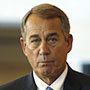
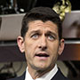
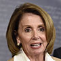
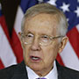

Jack Lew
As Treasury secretary, Lew is one of the key people sounding the alarm on the debt ceiling. He has been warning Congress for weeks now that not raising the ceiling could be catastrophic. Should the U.S. hit the ceiling, it's not certain what would happen next. Treasury might then have to decide which bills to prioritize.

John Boehner
The outgoing speaker is reportedly close to reaching a deal with fellow congressional leaders on a debt ceiling hike and a two-year budget deal. Reaching a deal on either issue could create political fallout for Paul Ryan, who will almost certainly be the next speaker, but it would also relieve Ryan of dealing with two huge immediate problems.

Paul Ryan
If Boehner reaches a debt ceiling or budget deal, conservative members might force a Speaker Ryan to take a stand on whether he would have done the same, especially if Boehner is forced to pass it with Democrats' votes. If Boehner does not reach a deal, Ryan will have to wangle votes in a divided GOP caucus. Conservative members may punish him for cutting a deal with or relying too heavily on votes from Democrats.

Nancy Pelosi
If Boehner reaches out to Democrats to get the bill passed, he would reach out to Pelosi. To the extent that a bill needs Democratic votes to pass, that makes her an important figure.
Mitch McConnell
The leader of the GOP in the Senate, McConnell and other congressional leadership got off to a slow start on budget talks this fall. However, there have been reports that leadership is nearing a deal on both the budget and the debt ceiling.

Harry Reid
The Senate minority leader has been in talks with McConnell on a budget for weeks. He and other congressional leadership will be responsible for working out the broad strokes of a deal.
Freedom Caucus
Members of the conservative caucus have said they're opposed to a clean debt ceiling bill and want a budget to cut funding to Planned Parenthood. They could make life very hard for Ryan as speaker if he makes a deal they do not like, or if Boehner makes one that Ryan appears to support.
Credit Rating Agencies
Repeated threats to hit the debt ceiling (meaning the U.S. might not be able to pay all its bills on time) could cause agencies to lower their ratings on government debt, which could in turn lead to higher interest rates and make it harder yet to pay.
Not a key figure in the budget negotiations
Appropriations Committee Members
Not a key figure in the debt ceiling negotiations
The House and Senate Appropriations committees will be tasked with hammering out the details of a budget once leadership reaches it.
President Obama
White House negotiators have been trying to hammer out a deal with congressional leaders. Because the president will sign or veto any eventual deals, he has a big say in setting the parameters.